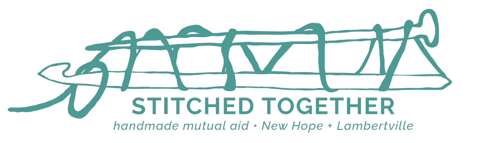
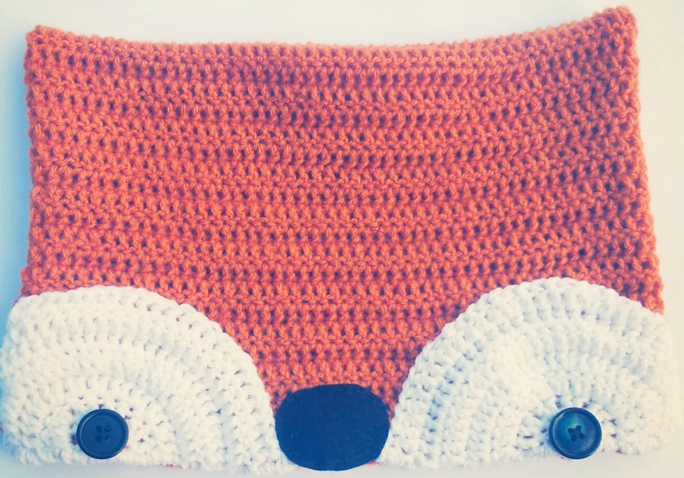
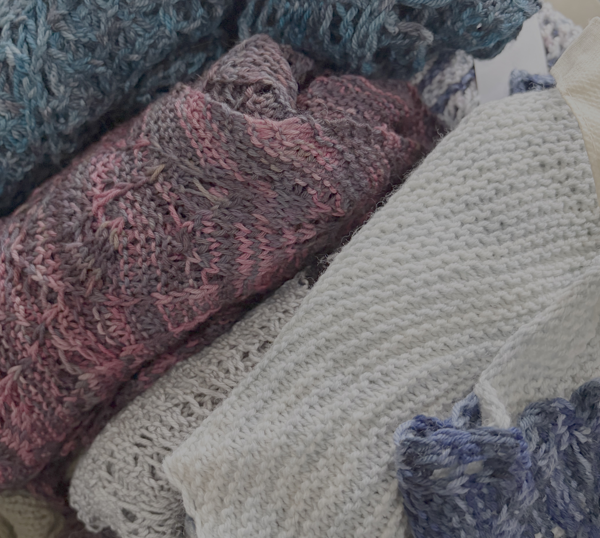
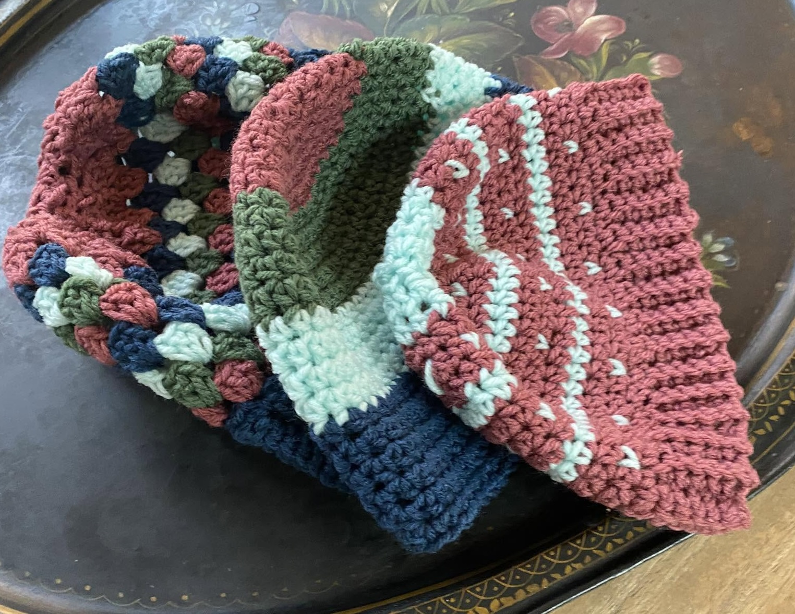
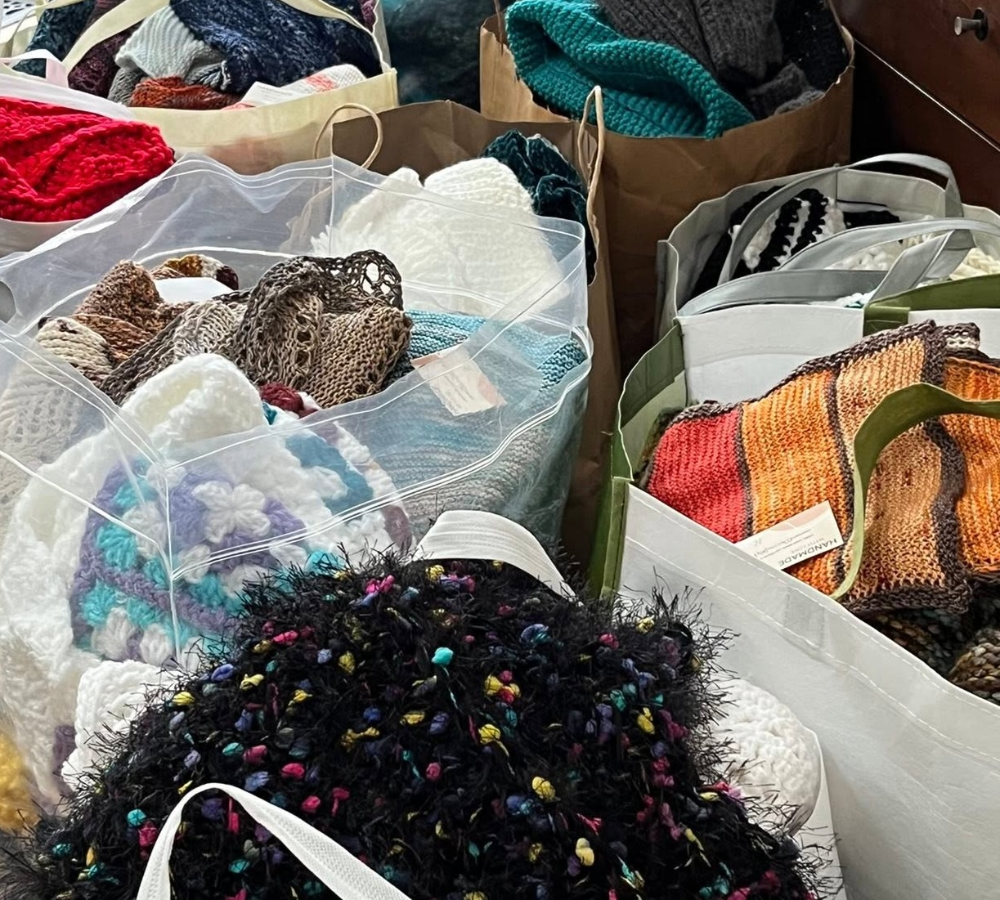
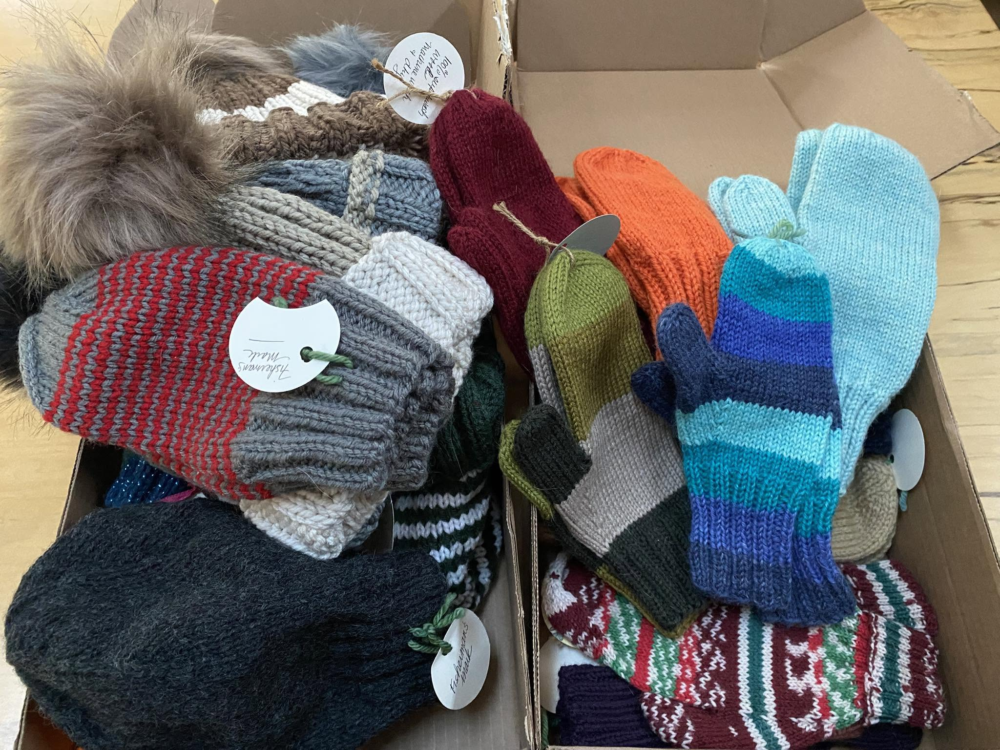
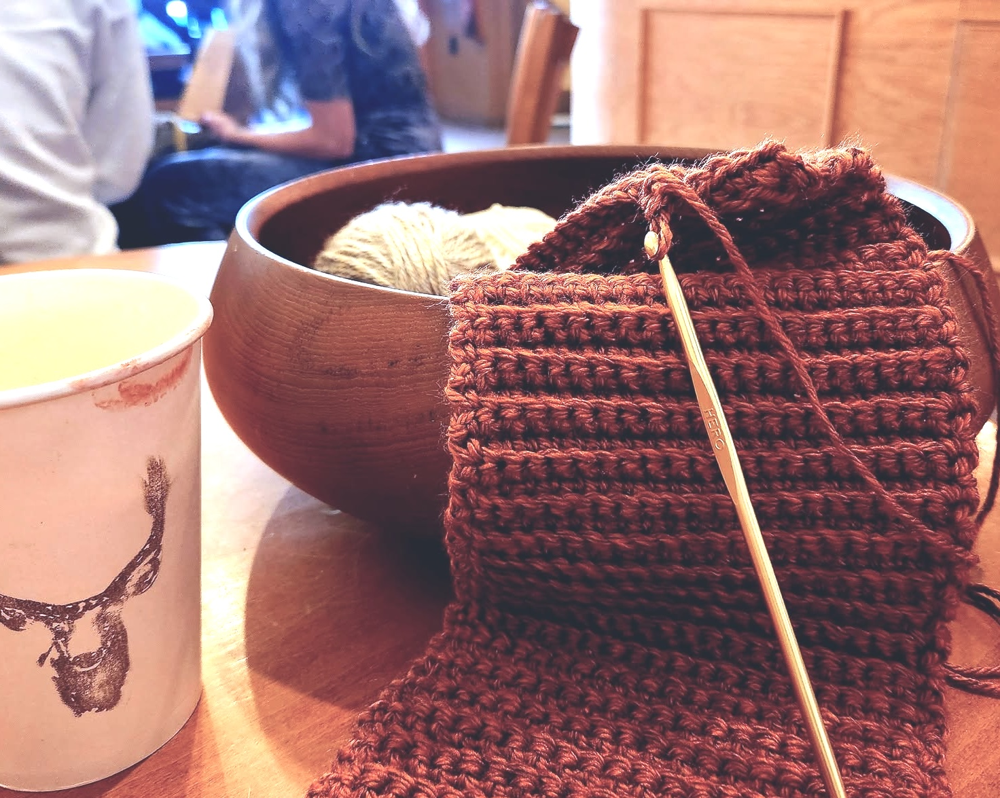
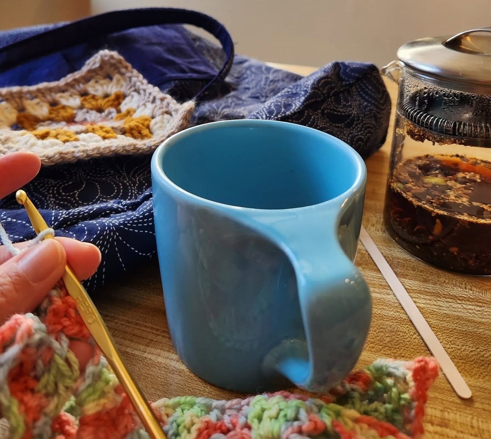
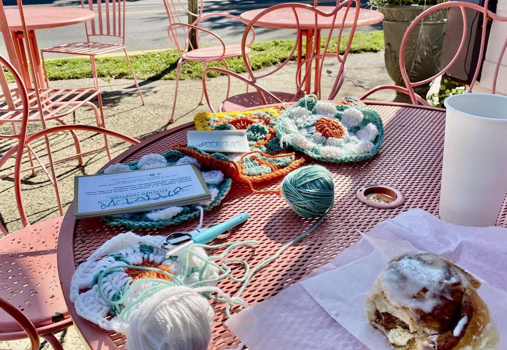

A community crafting project handmaking winter weather gear for our neighbors in New Hope, Lambertville, and surrounding communities.
Winter Weather Gear
We hand-make winter weather gear for neighbors in our community. Hats, gloves, scarves, sweaters, blankets, slippers — you name it! We partner with local community organizations like Fisherman's Mark in Lambertville to ensure direct support for our neighbors.





Sunday Stitch meetups
Each year we work from Labor Day through Martin Luther King Jr. Day on mutual aid projects in partnership with our local community organizations. You can find us every Sunday in coffee shops around New Hope and Lambertville. Sign up and/or check out our socials for details! We'd love to see you in town!



Sign Up
Whether you craft, drop off materials, help hand out gear, or just want to know when the next Sunday Stitch is — we'd love to have you.
Form not loading? Open the signup form in a new tab.